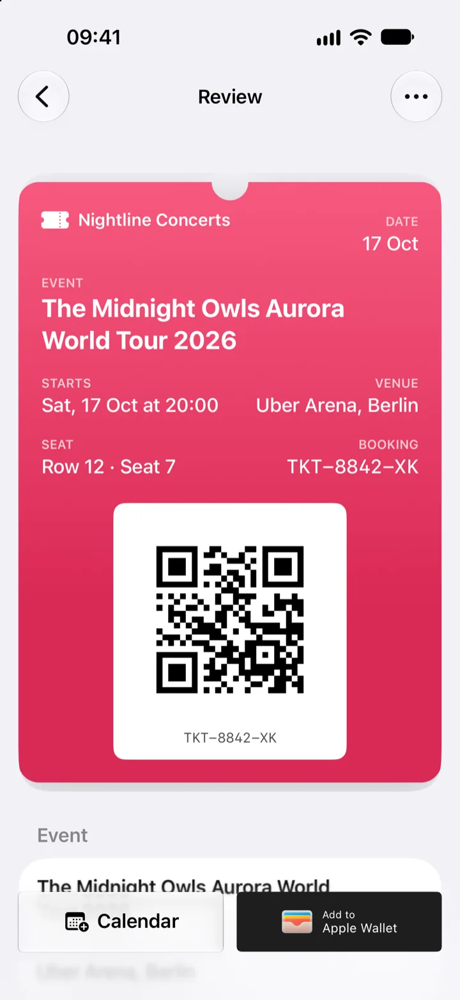
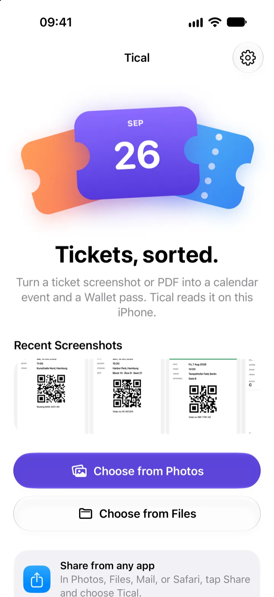
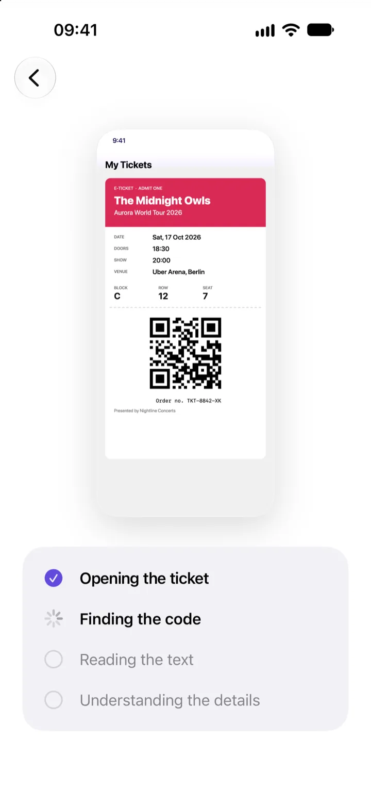
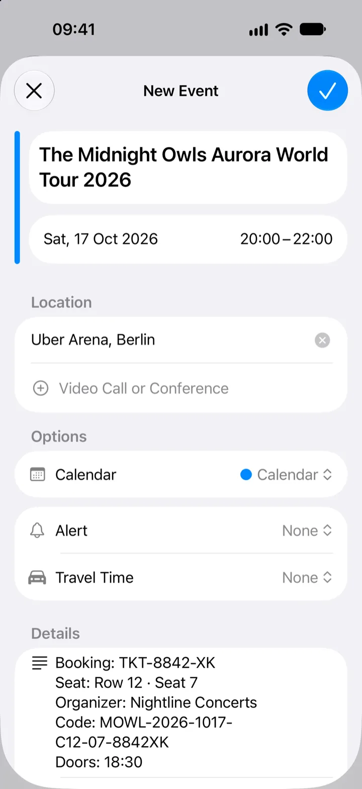
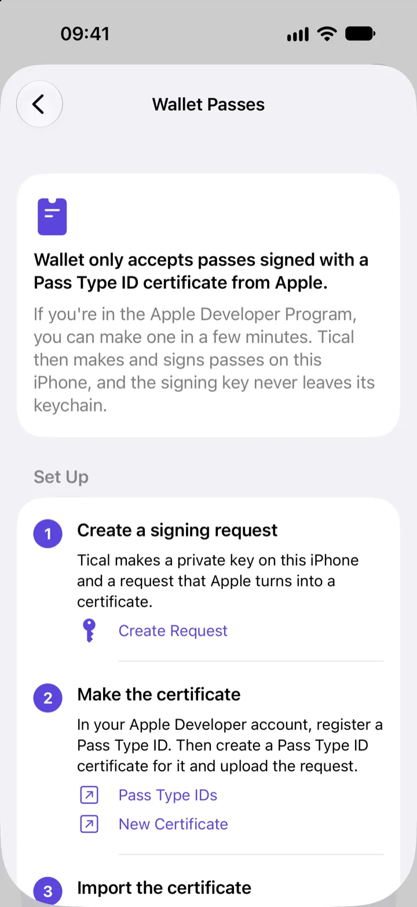

Screenshots, photos, and PDFs
Share from any app or pick from your library. In a PDF with several pages, Tical uses the page that carries the code.
For iPhone and iPad
Turn a ticket screenshot or PDF into a calendar event and an Apple Wallet pass. Tical reads it on your iPhone, and nothing is uploaded.
Requires iOS 27. Apple Wallet passes need an Apple Developer Program membership.

How it works

Tap one of your recent screenshots, choose a photo or a PDF, or share a ticket to Tical from Photos, Files, Mail, or Safari.

It finds the code and reads the event, date, time, venue, seat, and booking number. You see the pass as Wallet will show it, and can change anything.

Calendar opens with everything filled in, including the seat and booking code in the notes. Add to Apple Wallet puts the pass next to your other tickets.
Features
PDFs from small venues, museum passes, screenshots from apps without Wallet support. If it has a code, Tical can work with it.
Share from any app or pick from your library. In a PDF with several pages, Tical uses the page that carries the code.
QR, Aztec, PDF417, and Code 128 codes carry over as they are. Tical redraws the code and reads it back before you add the pass.
Tical looks at the ticket the way you would, and prefers the show time over the doors time. Without Apple Intelligence, a built-in parser takes over.
Events open in Calendar's own editor, so Tical never needs to see your calendar. Seat and booking code go into the notes.
Each pass takes its color from the ticket itself, and Tical keeps the text on it easy to read. Pick another color if you like.
No permission prompts, no account, and no tracking. Photos, Files, and Calendar open in system screens that give Tical only what you choose.
Apple Wallet
Tical builds each pass with the ticket's details, its code, and a color from the ticket. Then it signs the pass so Wallet accepts it, right on your iPhone.
Wallet only accepts passes signed with a Pass Type ID certificate from Apple, which needs an Apple Developer Program membership. Set it up once in Tical's settings. Not a developer? Adding to Calendar works for everyone.

Privacy
Tical doesn't collect anything. There's no server to send your tickets to.
Vision and Apple Intelligence run on your iPhone. Tickets are never uploaded.
Tical never asks for access to your photos, files, or calendar.
No sign-up, no analytics, and no ads.
The Wallet signing key lives in your iPhone's keychain. It never syncs to iCloud or moves to another device.
FAQ
No. Tical reads tickets with Vision and Apple Intelligence on your iPhone, and it has no server to upload to.
Apple Wallet only accepts passes signed with a Pass Type ID certificate, and Apple issues those only to members of the Apple Developer Program. Tical does the signing itself, on your iPhone, with your certificate.
Without a certificate, you can still add every ticket to Calendar.
The pass carries the same code as your ticket, and Tical checks that the redrawn code reads back the same before you add it. Some venues only accept their own app or the original ticket, so keep it at hand.
Screenshots, photos, and PDFs with a QR, Aztec, PDF417, Code 128, or Data Matrix code. Wallet can't show Data Matrix codes, so those become a QR code with the same content, and Tical tells you when that happens.
Yes. Adding to Calendar works the same. iPad has no Wallet app, so Tical sends the signed pass to your iPhone instead.
iOS 27 or later. Apple Intelligence gives the best results; without it, Tical uses its built-in text parser, and you can correct anything on the review screen.
Then use it. Tical is for the tickets that don't come with a Wallet pass.